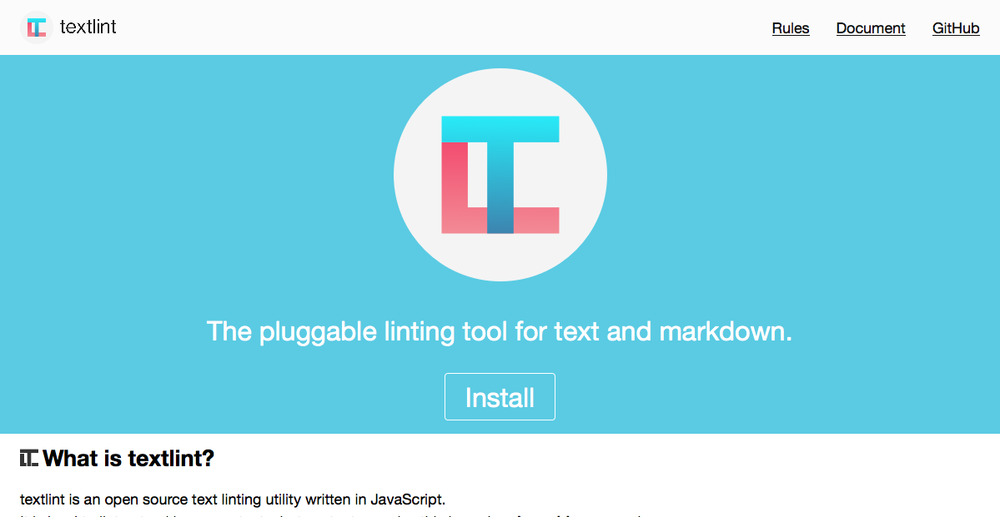

3分でわかるtextlint
自己紹介

- Name : azu
- Twitter : @azu_re
- Website: Web scratch, JSer.info
textlint
- 自然言語を扱うLintツール
- MarkdownやHTML、テキストファイルを扱える
- ファイルをASTとしてパースするため誤検知しない

オンラインデモ
- textlint.github.io/
- JavaScript(Node.js)で書かれているので当然ブラウザでも動かせる
- サイトはDeku v2 + Redux + SUIT CSS
- Reduxを理解するならDekuと合わせて使ったほうが簡単
- CodeMirrorプラグイン
英語向けルール
- textlint-rule-rousseau
- 英文法の簡易チェック
- textlint-rule-alex
- ポリティカルコネストな用語のチェック
日本語向けルール
- textlint-rule-preset-japanese
- 日本語向けルール詰め合わせ
- textlint-rule-preset-JTF-style
- JTF日本語標準スタイルガイド
ルール
- Collection of textlint rule · textlint/textlint Wiki
- 総ルール数は100ぐらいある
- プリセットでまとまってるので見かけは少ないめ
フォーマット
- Markdown
- txt
- HTML
- Re:VIEW

Textmate to AST
- azu/textlint-plugin-asciidoc: WIP
- Textmate bundleはシンタックスハイライトのための定義を持ってる
- 正規表現ベースだけど、よく出来たbundleは必要な部分の解析出来る
- textlint的に欲しいのは文章部分
- Textmate bundle -> Microsoft/vscode-textmate -> tokenはできた
- tokenからASTに組み上げるのは作る必要がある…
色々な使い方
- textlintで文章カバレッジレポートを継続的に見ていく | Web Scratch
- 文章のコードカバレッジを取る
今後
- もっと面白いルールを書ける土壌を作る